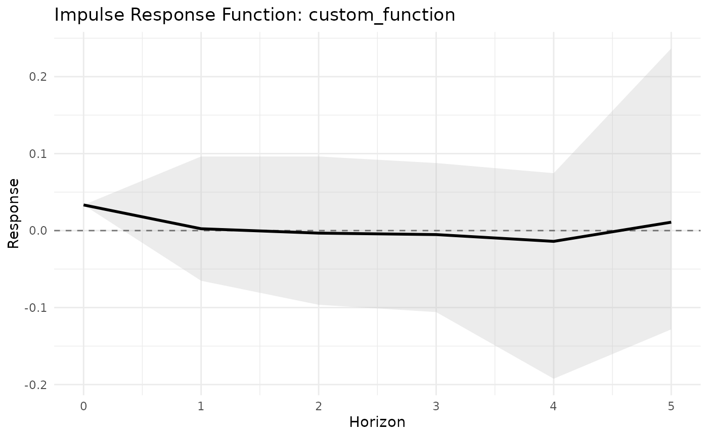

IRF plot with credible intervals
Usage
# S3 method for class 'dbn_irf'
plot(x, ci_level = 0.95, title = NULL, ...)Examples
# \donttest{
sim <- simulate_dynamic_dbn(n = 6, time = 10, seed = 1)
fit <- dbn(sim$Y, model = "dynamic", nscan = 200, burn = 100, verbose = FALSE)
S <- build_shock(m = 6, type = "unit_edge", i = 1, j = 2)
irf <- compute_irf(fit, shock = S, H = 5)
plot(irf)

# }